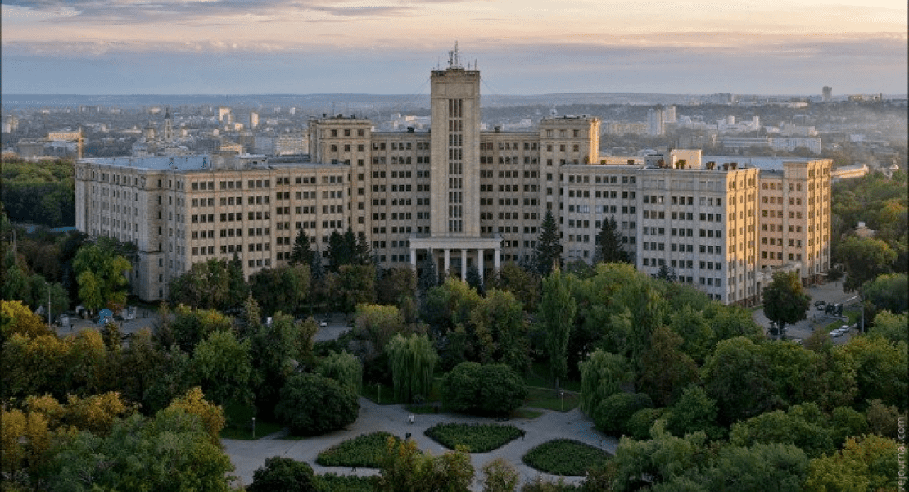
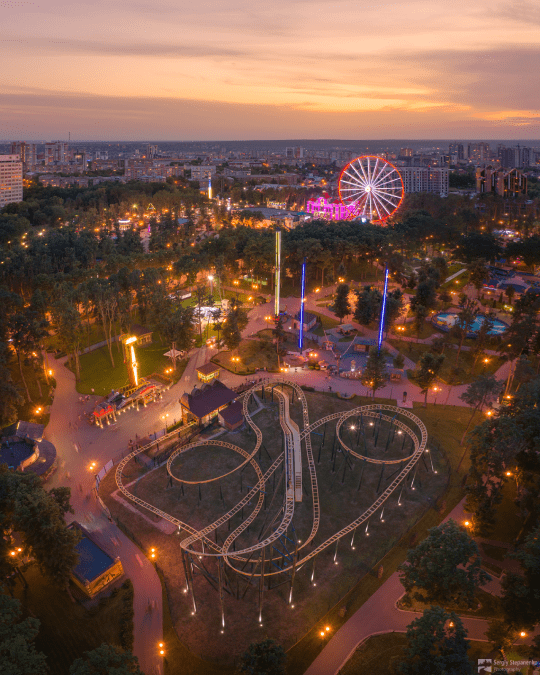
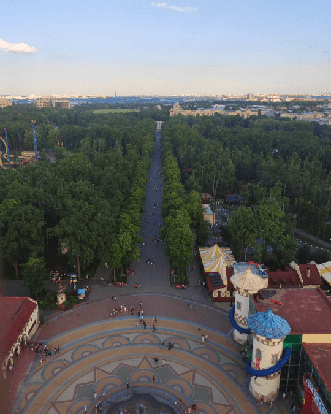
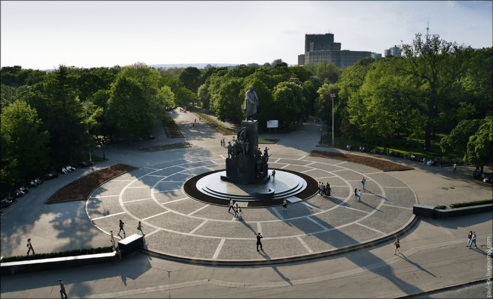
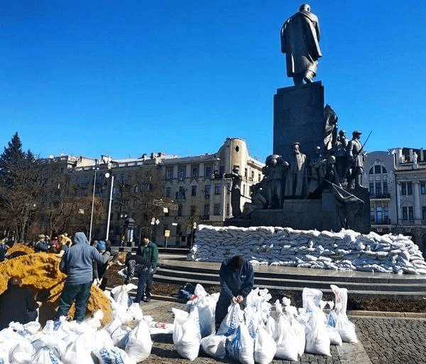

Про місто-герой
Харків
«Перша столиця» − так іноді неофіційно називають Харків і це не випадково, бо майже 10 років місто Харків було столицею України. Історія міста налічує три з половиною сторіччя, які були сповнені.
Харків – друге за величиною місто України з чисельністю населення приблизно півтора мільйона осіб.
Місто є потужним освітньо-науковим центром країни й по праву вважається найулюбленішим містом студентів, адже вміщує 54 вищих навчальних заклади освіти, серед яких один із найстаріших у Східній Європі − Харківський національний університет імені В. Н. Каразіна, що входить до топ-500 університетів світу, а також Національний технічний університет «Харківський політехнічний інститут», що входить до топ-1000 університетів світу, та більше ніж 50 науково-дослідних інститутів.

Харківський національний університет
Харків – культурна столиця України. Місто має 8 музеїв, міську картинну галерею, філармонію, 7 державних театрів і кілька десятків недержавних, 80 бібліотек. Харківський цирк є одним із найстаріших в Україні та бере свій початок ще з XVIII сторіччя.
Також Харків - місто великих і гарних парків. Центральний парк культури та відпочинку ім. Максима Горького є одною із найулюбленіших міських локацій для харків’ян. Це - великий міський парк Харкова, що розташовується на площі понад 130 га. Парк був закладений в 1893—1895 рр. і відкритий у 1907 році. На території парку знаходяться десятки атракціонів, декілька невеликих сцен, кінотеатр «Парк», дитяча залізниця, підвісна канатна дорога, тенісні корти тощо.
Також по вихідним харків’яни люблять проводити час у Саді ім. Тараса Шевченка, який прийнято вважати ботанічною пам'яткою природи у самому серці міста Харкова, сад є один з найстаріших у місті.

Центральний парк культури та відпочинку
ім. Максима Горького

Центральний парк культури та відпочинку
ім. Максима Горького, вид з колеса

Пам'ятник Тарасові Григоровичу Шевченку
в Саду ім. Тараса Шевченка
Пам’ятник Тарасові Шевченку є одним із символів міста, визначною міською монументальною пам'яткою. Цей монумент вважається одним з найкращих пам'ятників Тарасові Шевченку у світі. Щоб врятувати пам’ятку від обстрілів, небайдужі харків’яни обставили пам’ятник мішками з піском. Загальна висота монумента — понад 16 м, статуї Тараса Шевченка — 5,5 м. Усього знадобилось 15 000 мішків.

Харків’яни рятують від обстрілів
символ міста - пам'ятник Шевченку
Впродовж своєї історії Харків має безліч приводів для гордості – від розробки легендарного танку Т-34, роль якого була не з останніх в здобутті перемоги у Другій світовій війні, до створення Харківськими вченими рідкого струменевого скальпелю, який не має аналогів в світі при здійсненні складних операцій та є справжнім проривом в медицині.
Харків володіє повним комплектом нагород Ради Європи: Європейським Дипломом, Почесним Прапором, Почесною Відзнакою і Призом Європи.
Харків – місто-герой України! Указом Президента України від 6 березня 2022 року з метою відзначення подвигу, масового героїзму та стійкості громадян, виявлених у захисті своїх міст під час відсічі збройної агресії Російської Федерації проти України місту присвоєно почесну відзнаку «Місто-герой України».
Високу ціну свободи та демократії, яку заплатила Харківщина, що виступила захисним щитом не тільки для України, але й всієї Європи, можна подивитись на наступних фото: